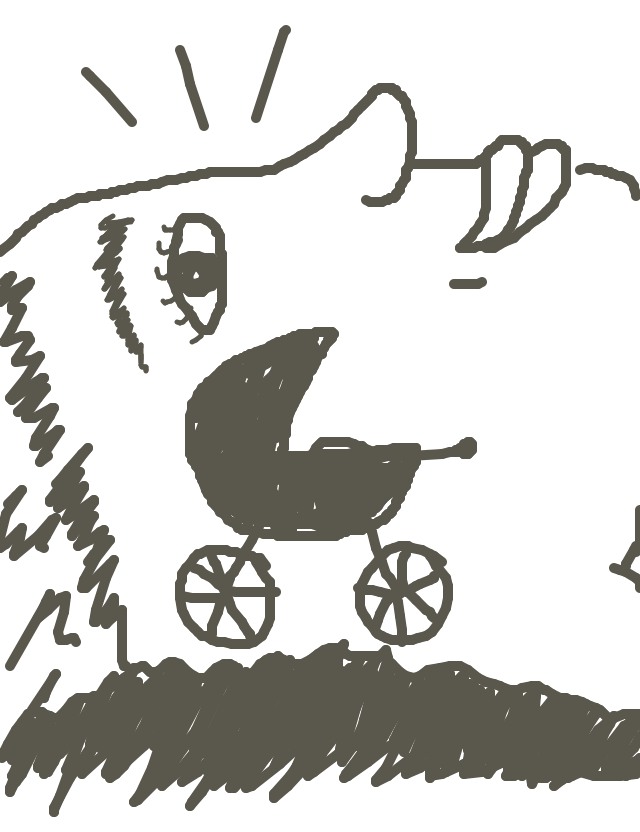
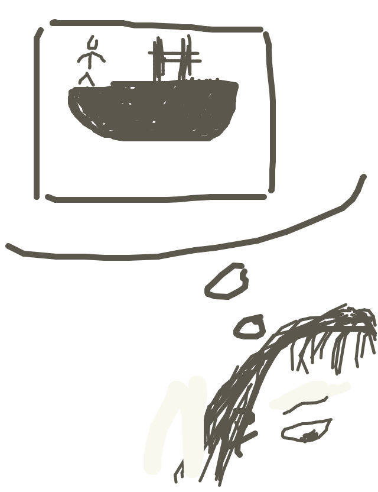
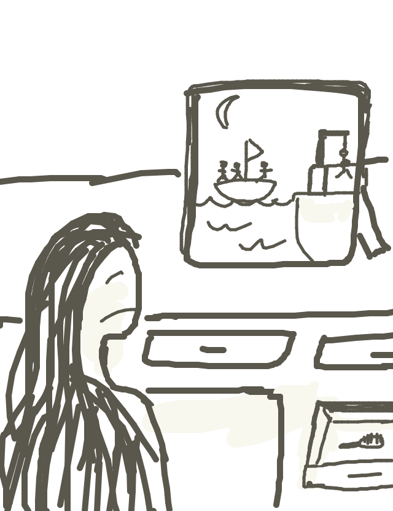
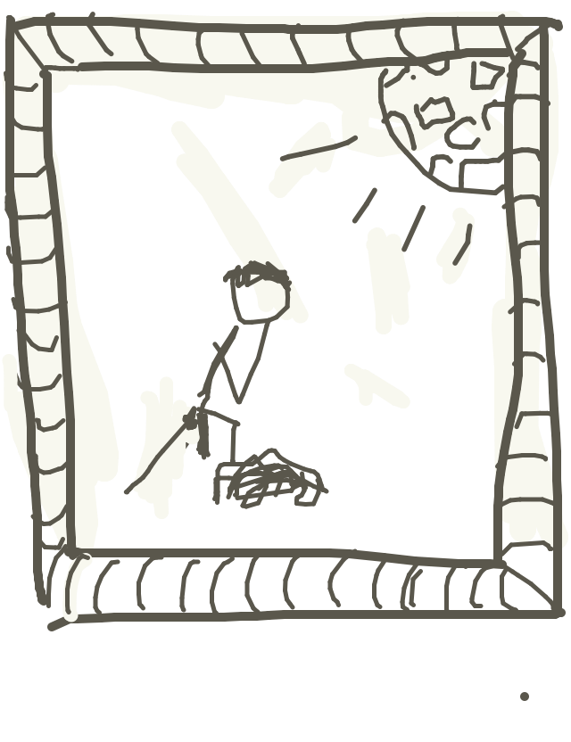

so jackcheng wrote...
Rosemary had a baby and everything was swell.
so matt drew...
so irondavy wrote...
Ah! The Battleship Potemkin! That was the film that delighted her so, those years ago in Film 101.
so mike drew...
so tag wrote...
Why did she stop combing her hair? The memory of this decision is lost. A drawing of a boat...there are men on it...a gallows. Ah, it is all coming back to her now.
so jason drew...
so dubbin wrote...
The stick figures gave it away - she'd blown millions on yet another forgery of the legendary "Hanging By Moonlight."
so loganroos drew...
